第 27 章：SP-GiST
27.1 总览
SP-GiST 名称中的首字母代表空间划分。这里的空间被理解为执行搜索的任意值集合；它不必是常规意义上的空间 (比如二维平面)。名称中的 GiST 部分暗示了 GiST 和 SP-GiST 方法之间的某种相似性：它们都是广义搜索树，并作为索引各种数据类型的框架。
SP-GiST 方法背后的思想 1 是将搜索空间分割成几个非重叠的区域，这些区域又可以递归地分割成子区域。这样的划分产生了非平衡树 (与 B 树和 GiST 不同)，可以用来实现诸如四叉树、k-D 树和基数树 (字典树) 等众所周知的结构。
非平衡树通常分支较少，因此深度较大。例如，一个四叉树节点最多有四个子节点，而一个 k-D 树节点只能有两个。如果树保留在内存中，这并不会引起任何问题；但是当存储在磁盘上时，树节点必须尽可能密集地打包进页面以最小化 I/O，这项任务并不是那么简单。B 树和 GiST 索引不需要处理这个问题，因为它们的每个树节点都占据整个页面。
SP-GiST 树的内部节点包含一个满足其所有子节点条件的值。这样的值通常称为前缀；它与 GiST 索引中的谓词扮演着相同的角色。指向 SP-GiST 子节点的指针可能含有标签。
叶节点元素包含一个索引值 (或它的一部分) 以及相应的 TID。
就像 GiST 一样，SP-GiST 访问方法仅实现主要算法，诸如并发访问、锁和日志记录等底层细节。新的空间划分算法和数据类型可以通过操作符类接口添加。操作符类提供大部分逻辑，并定义了许多索引方面的功能。
在 SP-GiST 中，搜索从根节点开始，2 深度优先。通过 consistency 函数来选择值得下降的节点，与 GiST 中使用的 consistency 函数类似。对于树的内部节点，这个函数返回一组其值与搜索谓词不矛盾的子节点。consistency 函数不会下降到这些节点：它仅仅评估相应的标签和前缀。对于叶节点，它判断该节点的索引值是否与搜索谓词匹配。
在非平衡树中，搜索时间会因为分支的深度而有所不同。
有两个支持函数参与将值插入到 SP-GiST 索引中。当从根节点开始遍历树时，choose 函数会做出以下决策之一：将新值发给一个现有的子节点，为该值创建一个新的子节点，或者分裂当前节点 (如果这个值与当前节点的前缀不匹配)。如果选定的叶子页面没有足够的空间，picksplit 函数用于决定哪些节点应该移动到新页面。
现在我将提供一些示例来说明这些算法。
27.2 点的四叉树
四叉树用于在二维平面上索引点。平面根据选定点被递归地分割成四个区域 (象限)。
这个点称为中心点；它作为节点前缀，即定义子值位置的条件。
根节点将平面分割成四个象限。
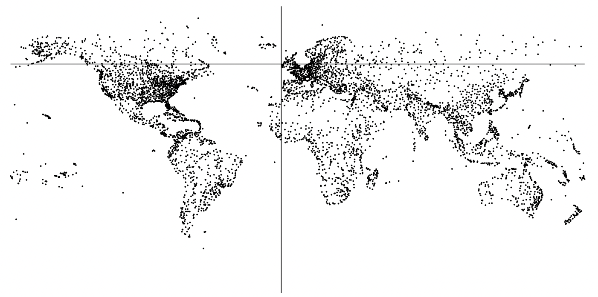然后，每个象限进一步分割成它自己的四个象限。
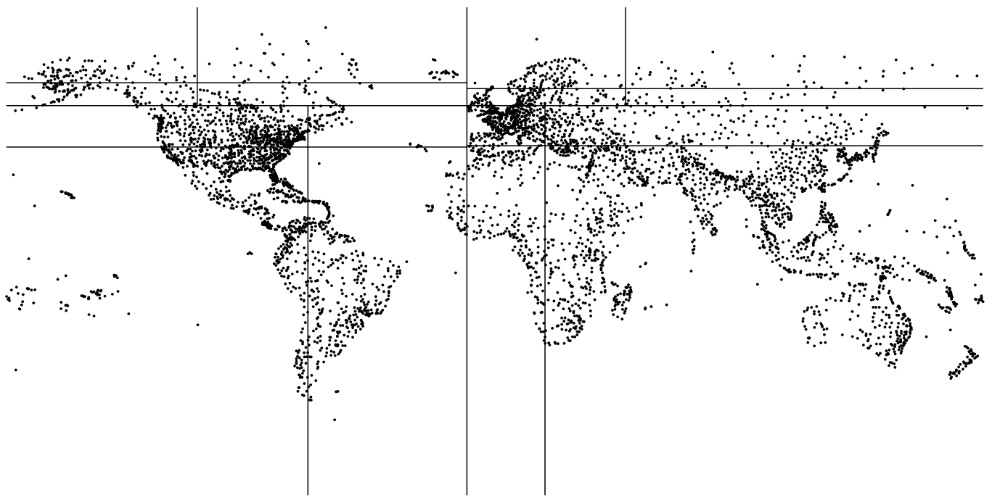这个过程持续进行，直到达到所需的区域数量。
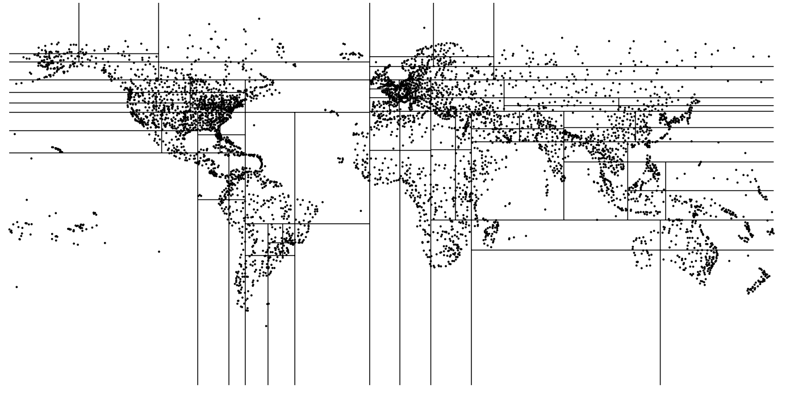这个例子使用了基于 airports_big 表建立的索引。示意图显示，分支深度取决于相应象限中点的密度。为了可视化，我将 fillfactor 存储参数设置为较小的值，这使得树的深度更深。
=> CREATE INDEX airports_quad_idx ON airports_big
USING spgist(coordinates) WITH (fillfactor = 10);点的默认操作符类是 quad_point_ops。
27.2.1 操作符类
我已经提及了 SP-GiST 支持函数：3 用于搜索的 consistency 函数和用于插入的 picksplit 函数。
现在，让我们看一下 quad_point_ops 操作符类的支持函数列表。4 所有这些函数都是必须的。
=> SELECT amprocnum, amproc::regproc
FROM pg_am am
JOIN pg_opclass opc ON opcmethod = am.oid
JOIN pg_amproc amop ON amprocfamily = opcfamily
WHERE amname = 'spgist'
AND opcname = 'quad_point_ops'
ORDER BY amprocnum;
amprocnum | amproc
−−−−−−−−−−−+−−−−−−−−−−−−−−−−−−−−−−−−−−−
1 | spg_quad_config
2 | spg_quad_choose
3 | spg_quad_picksplit
4 | spg_quad_inner_consistent
5 | spg_quad_leaf_consistent
(5 rows)这些函数执行以下任务：
1 config 函数向访问方法报告操作符类的基本信息。
2 choose 函数选择要插入的节点。
3 picksplit 函数在页面分裂后，在页面之间分配节点。
4 inner_consistent 函数检查内部节点的值是否满足搜索谓词。
5 leaf_consistent 函数判断叶节点中存储的值是否满足搜索谓词。
还有几个可选的函数。
quad_point_ops 操作符类支持与 GiST 相同的策略：5
=> SELECT amopopr::regoperator, oprcode::regproc, amopstrategy
FROM pg_am am
JOIN pg_opclass opc ON opcmethod = am.oid
JOIN pg_amop amop ON amopfamily = opcfamily
JOIN pg_operator opr ON opr.oid = amopopr
WHERE amname = 'spgist'
AND opcname = 'quad_point_ops'
ORDER BY amopstrategy;
amopopr | oprcode | amopstrategy
−−−−−−−−−−−−−−−−−−+−−−−−−−−−−−−−−−−+−−−−−−−−−−−−−−
<<(point,point) | point_left | 1
>>(point,point) | point_right | 5
~=(point,point) | point_eq | 6
<@(point,box) | on_pb | 8
<<|(point,point) | point_below | 10
|>>(point,point) | point_above | 11
<−>(point,point) | point_distance | 15
<^(point,point) | point_below | 29
>^(point,point) | point_above | 30
(9 rows)例如，你可以使用上述操作符 >^ 来找出位于迪克森北部的机场。
=> SELECT airport_code, airport_name->>'en'
FROM airports_big
WHERE coordinates >^ '(80.3817,73.5167)'::point;
airport_code | ?column?
−−−−−−−−−−−−−−+−−−−−−−−−−−−−−−−−−−−−−−−−−−−
THU | Thule Air Base
YEU | Eureka Airport
YLT | Alert Airport
YRB | Resolute Bay Airport
LYR | Svalbard Airport, Longyear
NAQ | Qaanaaq Airport
YGZ | Grise Fiord Airport
DKS | Dikson Airport
(8 rows)
=> EXPLAIN (costs off) SELECT airport_code
FROM airports_big
WHERE coordinates >^ '(80.3817,73.5167)'::point;
QUERY PLAN
−−−−−−−−−−−−−−−−−−−−−−−−−−−−−−−−−−−−−−−−−−−−−−−−−−−−−−−−−−−−−−−
Bitmap Heap Scan on airports_big
Recheck Cond: (coordinates >^ '(80.3817,73.5167)'::point)
−> Bitmap Index Scan on airports_quad_idx
Index Cond: (coordinates >^ '(80.3817,73.5167)'::point)
(4 rows)让我们深入分析一下四叉树的结构和内部工作原理。我们将使用 GiST 章节中提到的相同例子，它包含几个点。
以下是在这种情况下如何划分平面的示意图：
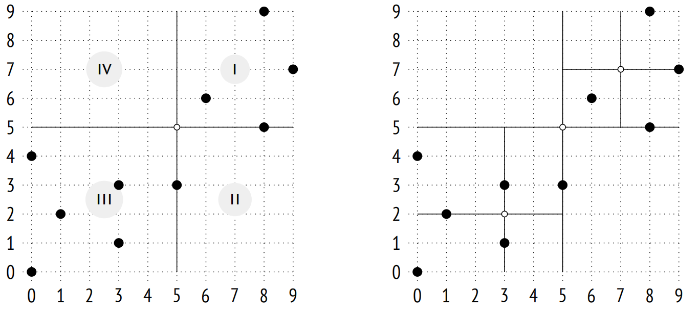左边的插图展示了树的某一层级中象限的编号；为了清晰起见，接下来的插图中，我将按照相同的顺序从左到右放置子节点。位于边界上的点被划入编号较小的象限。右边的插图显示了最终的分区。
你可以在下面看到该索引可能的结构。每个内部节点最多引用四个子节点，每个指针都用象限号标记：
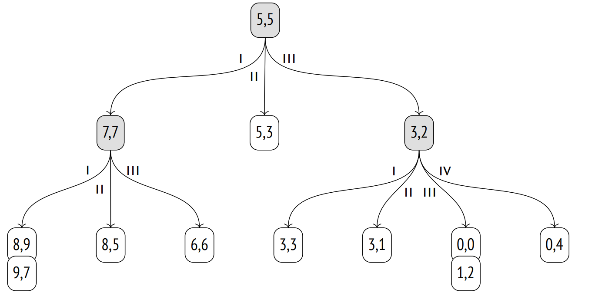27.2.2 页面布局
与 B 树和 GiST 索引不同，SP-GiST 树节点和页面之间没有一对一的对应关系。由于内部节点通常没有太多子节点，因此多个节点必须被打包进一个单独的页面中。不同类型的节点存储在不同的页面：内部节点存储在内部页面中，而叶节点则存储在叶子页面中。
内部页面中存储的索引项持有用作前缀的值，以及一组指向子节点的指针；每个指针可能伴随一个标签。
叶子页面的条目由一个值和一个 TID 组成。
与特定内部节点相关的所有叶节点都存储在一个单独的页面中，并绑定成一个列表。如果页面无法容纳另一个节点，这个列表可以移动到不同的页面，6 或者，页面也可以被分裂；无论哪种方式，列表从不会延伸至多个页面。
为了节省空间，算法尝试将新节点添加到同一页中，直到这些页面完全填满。最后使用的页面编号被后台进程缓存，并定期保存在零页中，称为元页面。元页面不包含指向根节点的引用，我们在 B 树中会看到根节点，而 SP-GiST 索引的根始终位于第一页。
不幸的是，pageinspect 扩展并没有提供窥探 SP-GiST 的函数，但我们可以使用名为 gevel 7 的外部扩展。它曾试图将其功能整合到 pageinspect 中，但并未成功。8
回到我们的例子。下面的插图显示了树节点如何在页面之间分配。quad_point_ops 操作符类实际上并不使用标签。由于一个节点最多可以有四个子节点，因此索引保留了一个固定大小的四指针数组，其中一些可能是空的。
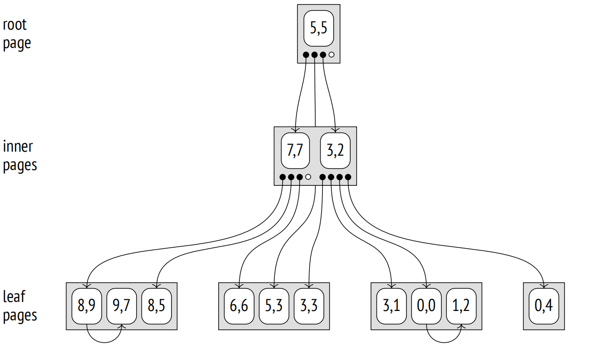27.2.3 搜索
让我们用同样的例子来看一下搜索位于点 (3,7) 上方的点的算法。
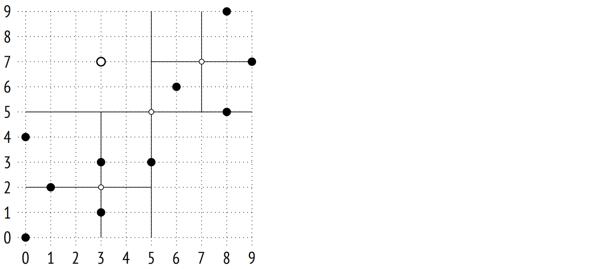搜索从根节点开始。内部 consistency 函数 9 决定了要下降的子节点。点 (3,7) 与根节点的中心点 (5,5) 进行比较，来选择可能包含所寻找点的象限；在这个例子中，是第一象限和第四象限。
一旦进入了具有中心点 (7,7) 的节点，我们必须再次选择要下降的子节点。它们属于第一象限和第四象限，但由于第四象限为空，我们只需要检查一个叶节点。叶节点的 consistency 函数 10 将此节点的点与查询中指定的点 (3,7) 进行比较。只有 (8,9) 满足上述条件。
现在我们只需要回到上一层，并检查对应于根节点的第四象限的节点。它是空的，所以搜索就完成了。

27.2.4 插入
当一个值被插入到 SP-GiST 树中时，11 之后的每一个动作都由 choice 函数决定。12 在这个特定的情况下，它简单地将点指向对应其象限的现有节点之一。
例如，让我们添加值 (7,1)：
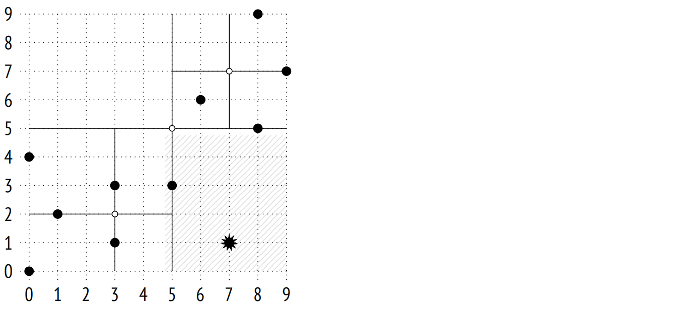这个值属于第二象限，将被添加到相应的树节点中：
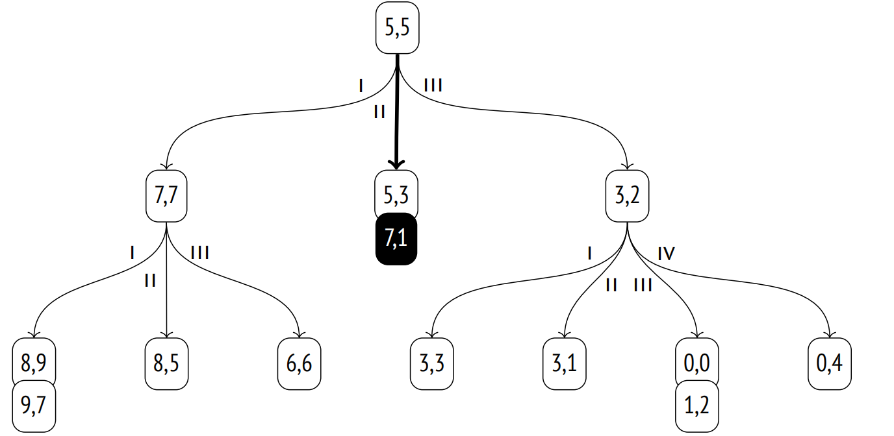如果在插入后，所选象限中的叶节点列表变得过大 (必须适应单个页面)，那么页面会分裂。picksplit 函数 13 通过计算所有点坐标的平均值来确定新的中心点，从而或多或少均匀地在新象限之间分配子节点。
下图说明了由于点 (2,1) 插入而导致的页面溢出：
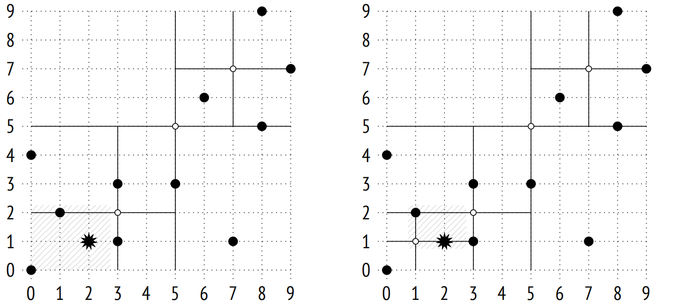中心点是 (1,1) 的新内部节点被添加到树中，同时点 (0,0)、(1,2) 和 (2,1) 在新象限之间重新分配：
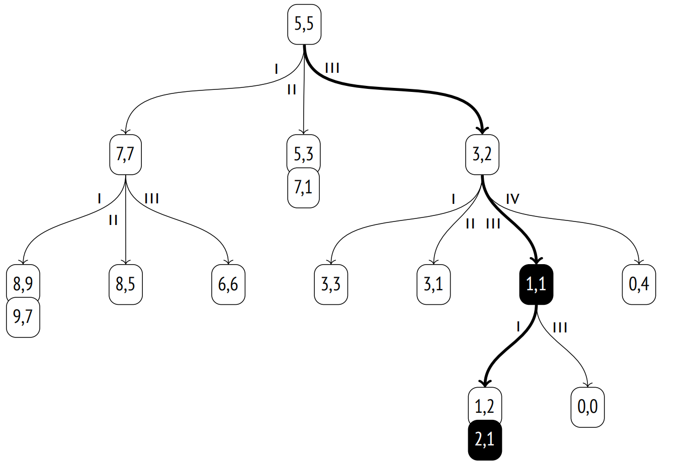27.2.5 属性
访问方法属性。spgist 方法显示以下属性：
=> SELECT a.amname, p.name, pg_indexam_has_property(a.oid, p.name)
FROM pg_am a, unnest(array[
'can_order', 'can_unique', 'can_multi_col',
'can_exclude', 'can_include'
]) p(name)
WHERE a.amname = 'spgist';
amname | name | pg_indexam_has_property
−−−−−−−−+−−−−−−−−−−−−−−−+−−−−−−−−−−−−−−−−−−−−−−−−−
spgist | can_order | f
spgist | can_unique | f
spgist | can_multi_col | f
spgist | can_exclude | t
spgist | can_include | t
(5 rows)不支持排序和唯一性属性。也不支持多列索引。
支持排它约束，与 GiST 类似。
可以创建带有额外 INCLUDE 列的 SP-GiST 索引。
索引级属性。与 GiST 不同，SP-GiST 索引不支持聚簇：
=> SELECT p.name, pg_index_has_property('airports_quad_idx', p.name)
FROM unnest(array[
'clusterable', 'index_scan', 'bitmap_scan', 'backward_scan'
]) p(name);
name | pg_index_has_property
−−−−−−−−−−−−−−−+−−−−−−−−−−−−−−−−−−−−−−−
clusterable | f
index_scan | t
bitmap_scan | t
backward_scan | f
(4 rows)支持以两种方式获取 TIDS (要么逐个获取，要么作为位图)。不支持反向扫描，因为这对 SP-GiST 来说没有任何意义。
列级属性。在大多数情况下，列级属性是相同的：
=> SELECT p.name,
pg_index_column_has_property('airports_quad_idx', 1, p.name)
FROM unnest(array[
'orderable', 'search_array', 'search_nulls'
]) p(name);
name | pg_index_column_has_property
−−−−−−−−−−−−−−+−−−−−−−−−−−−−−−−−−−−−−−−−−−−−−
orderable | f
search_array | f
search_nulls | t
(3 rows)不支持排序，因此所有相关属性都没有任何意义，并且被禁用。
到目前为止我还没有提到空值，但正如我们在索引属性中看到的，是支持空值的。不同于 GiST，SP-GiST 索引不在主树中存储空值。相反，它会创建一个单独的树；它的根位于第二个索引页面。因此，前三个页面始终具有相同的含义：元页面、主树的根和空值树的根。
一些列级属性可能取决于特定的操作符类：
=> SELECT p.name,
pg_index_column_has_property('airports_quad_idx', 1, p.name)
FROM unnest(array[
'returnable', 'distance_orderable'
]) p(name);
name | pg_index_column_has_property
−−−−−−−−−−−−−−−−−−−−+−−−−−−−−−−−−−−−−−−−−−−−−−−−−−−
returnable | t
distance_orderable | t
(2 rows)就像本章中的所有其他例子一样，这个索引可以用于仅索引扫描。
但通常来说，操作符类不一定在叶子页面中存储完整的值，因为可以通过表重新检查它们。举个例子，这允许在 PostGIS 中使用 SP-GiST 索引来处理潜在的大型几何值。
支持最近邻搜索；我们已经在操作符类中看到了排序操作符 <->。
27.3 点的 K 维树
平面上的点也可以使用另一种分区方法进行索引：我们可以将平面分成两个子区域，而不是四个。这种分区由 kd_point_ops 14 操作符类实现：
=> CREATE INDEX airports_kd_idx ON airports_big
USING spgist(coordinates kd_point_ops);请注意，索引值、前缀和标签可能具有不同的数据类型。对于这个操作符类，值表示为点，前缀是实数，而没有提供标签 (如 quad_point_ops 中的)。
让我们在 Y 轴上选择某个坐标 (它在示例中定义了纬度，与机场相对应)。这个坐标将平面分为两个子区域，上区域和下区域：
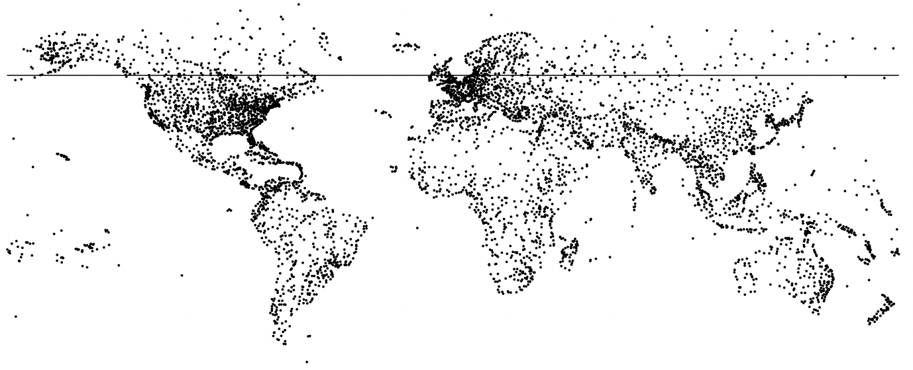对于这些子区域中的每一个，选择 X 轴 (经度) 上的坐标，将它们分成左右两个子区域：
我们将继续分割每一个得到的子区域，轮流进行水平和垂直划分，直到每个部分中的点适应单一索引页为止：
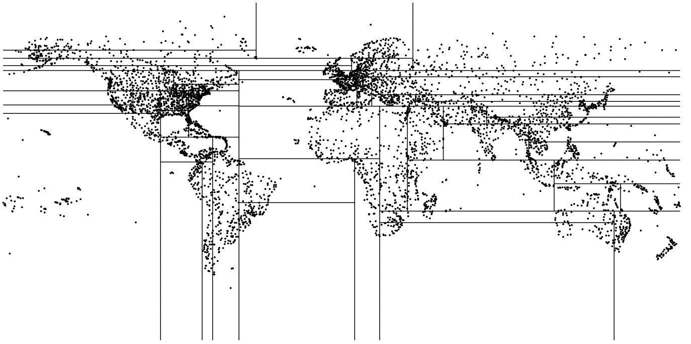以这种方式构建的树的所有内部叶节点将只有两个子节点。这种方法可以很容易地推广到任意维度的空间，因此这样的树通常被称为 k 维树 (k-D 树)。
27.4 字符串的基数树
SP-GiST 的 text_ops 操作符类为字符串实现了基数树。15 在这里，内部节点的前缀确实是一个前缀，它是所有子节点中字符串的共同部分。
指向子节点的指针由前缀后面的值的第一个字节标记。
为清楚起见，我使用单个字符来表示前缀，但这仅适用于 8 字节编码。通常，操作符类将字符串作为字节序进行处理。此外，前缀可以取几个具有特殊语义的其他值，因此每个前缀实际上分配了两个字节。
子节点存储前缀和标签后面的部分值。叶节点只保留后缀。
这是一个基于几个名称构建的基数树的例子：
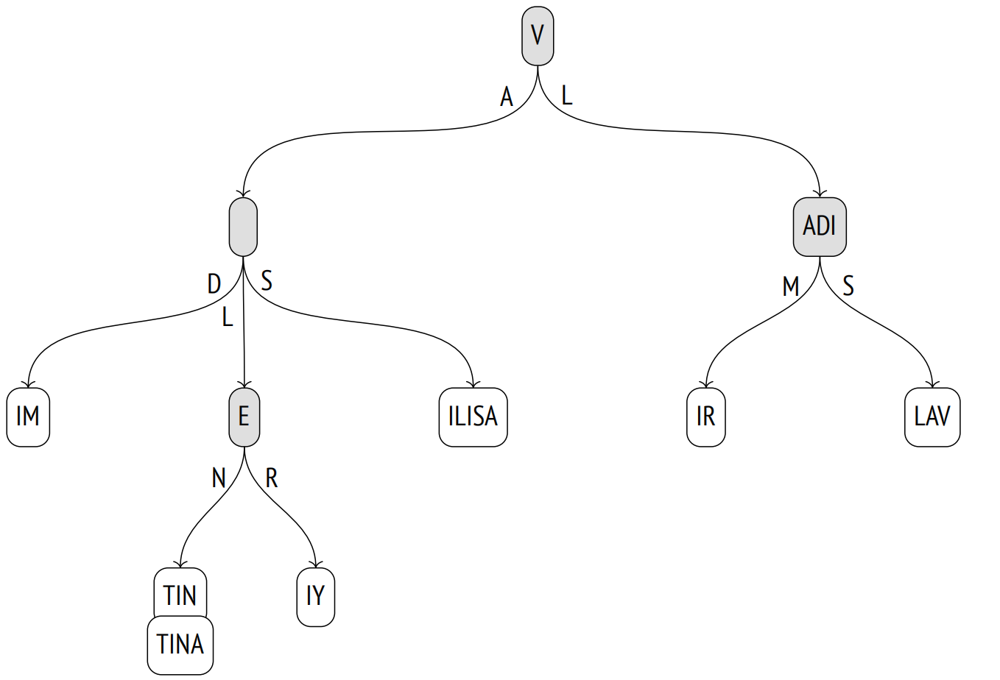为了重构叶子页面中索引键的完整值，我们可以从根节点开始，连接所有的前缀和标签。
27.4.1 操作符类
text_ops 操作符类支持通常用于 ordinal 数据类型的比较操作符，包括文本字符串：
=> SELECT oprname, oprcode::regproc, amopstrategy
FROM pg_am am
JOIN pg_opclass opc ON opcmethod = am.oid
JOIN pg_amop amop ON amopfamily = opcfamily
JOIN pg_operator opr ON opr.oid = amopopr
WHERE amname = 'spgist'
AND opcname = 'text_ops'
ORDER BY amopstrategy;
oprname | oprcode | amopstrategy
−−−−−−−−−+−−−−−−−−−−−−−−−−−+−−−−−−−−−−−−−−
~<~ | text_pattern_lt | 1
~<=~ | text_pattern_le | 2
= | texteq | 3
~>=~ | text_pattern_ge | 4
~>~ | text_pattern_gt | 5
< | text_lt | 11
<= | text_le | 12
>= | text_ge | 14
> | text_gt | 15
^@ | starts_with | 28
(10 rows)常规操作符处理字符，而带波浪号的操作符处理字节。它们不考虑排序规则 (就像 B 树的 text_pattern_ops 操作符类)，所以它们可以用来加速 LIKE 条件的搜索：
=> CREATE INDEX tickets_spgist_idx ON tickets
USING spgist(passenger_name);
=> EXPLAIN (costs off) SELECT *
FROM tickets
WHERE passenger_name LIKE 'IVAN%';
QUERY PLAN
−−−−−−−−−−−−−−−−−−−−−−−−−−−−−−−−−−−−−−−−−−−−−−−−−−−−−−−−−−−
Bitmap Heap Scan on tickets
Filter: (passenger_name ~~ 'IVAN%'::text)
−> Bitmap Index Scan on tickets_spgist_idx
Index Cond: ((passenger_name ~>=~ 'IVAN'::text) AND
(passenger_name ~<~ 'IVAO'::text))
(5 rows)如果将常规操作符 >= 和 < 与 “C” 以外的排序规则一起使用，那么索引实际上变得毫无用处，因为它处理的是字节而不是字符。
对于这种前缀搜索的情况，操作符类提供了更为合适的 ^@ 操作符：
=> EXPLAIN (costs off) SELECT *
FROM tickets
WHERE passenger_name ^@ 'IVAN';
QUERY PLAN
−−−−−−−−−−−−−−−−−−−−−−−−−−−−−−−−−−−−−−−−−−−−−−−−−−−−
Bitmap Heap Scan on tickets
Recheck Cond: (passenger_name ^@ 'IVAN'::text)
−> Bitmap Index Scan on tickets_spgist_idx
Index Cond: (passenger_name ^@ 'IVAN'::text)
(4 rows)基数树的表示有时会比 B 树更为紧凑，因为它不存储完整的值：它会在遍历树的时候根据需要重建这些值。
27.4.2 搜索
让我们在 names 表上运行以下查询：
SELECT *
FROM names
WHERE name ~>=~ 'VALERIY'
AND name ~<~ 'VLADISLAV';首先，在根节点上调用内部 consistency 函数 16，以确定要下降的子节点。这个函数将前缀 V 与标签 A 和 L 连接起来。接收到的值 VA 进入查询条件；字符串字面量在那里被截断，以确保它们的长度不会超过正在检查的值的长度：VA ~ >=~ ‘VA’ and VA ~ <~ ‘VL’。条件满足，所以需要检查带标签 A 的子节点。值 VL 以同样的方式检查。它也是一个匹配项，所以也需要检查带标签 L 的节点。
现在让我们取与值 VA 对应的节点。它的前缀是空的，所以对于三个子节点，内部 consistency 函数通过连接在前一步接收到的 VA 和标签，重构值 VAD、VAL 和 VAS。条件 VAD ~ >=~ ‘VAL’ and VAD ~ <~ ‘VER’ 不成立，但其他两个值是合适的。
当以这种方式遍历树时，算法会过滤掉不匹配的分支，并到达叶节点。叶节点的 consistency 函数检查在遍历树期间重建的值是否满足查询条件。匹配的值作为索引扫描的结果返回。

请注意，虽然查询使用了大于和小于操作符，这些操作符对于 B 树来说很常见，但是通过 SP-GiST 进行范围搜索的效率要低得多。在 B 树中，下降到范围的一个边界值，然后扫描叶子页面列表就足够了。
27.4.3 插入
点的操作符类的 choice 函数总是可以将一个新值导向一个现有子区域之一 (一个象限或其中的一半)。但对于基数树来说并非如此：新值可能与任何现有的前缀都不匹配，在这种情况下必须分裂内部节点。
让我们将名称 VLADA 添加到一个已经创建的树中。
choice 函数 17 成功地从根节点下降到下一个节点 ( V+L )，但值的剩余部分 ADA 与 ADI 前缀不匹配。节点必须被分成两部分：其中一个结果节点将包含公共部分的前缀 (AD)，而前缀的其余部分将被下移一级：
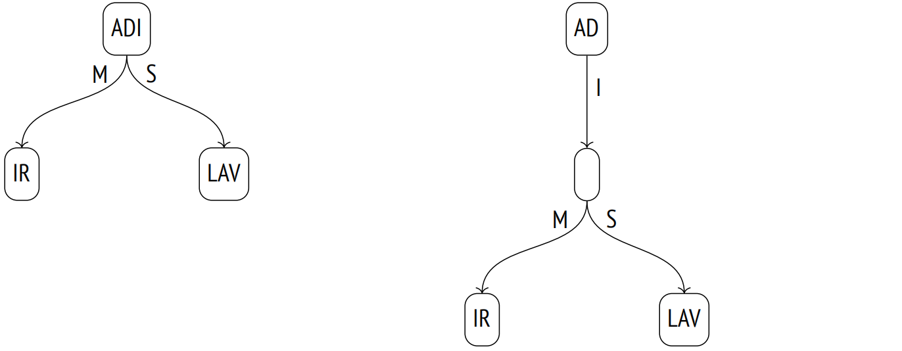然后，再次在同一节点上调用 choice 函数。前缀现在对应于该值，但是没有带有合适标签 (A) 的子节点，所以函数决定创建这样一个节点。最终结果如下图所示；在插入过程中添加或修改的节点会高亮显示=。
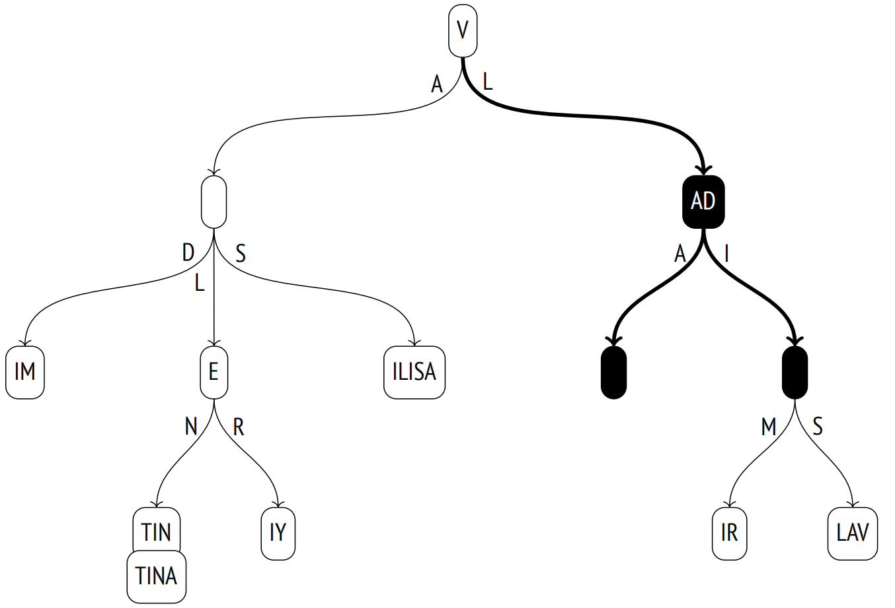27.4.4 属性
我已经在上面描述了访问方法和索引级属性；它们对所有类都是通用的。大多数列级属性也保持不变。
=> SELECT p.name,
pg_index_column_has_property('tickets_spgist_idx', 1, p.name)
FROM unnest(array[
'returnable', 'distance_orderable'
]) p(name);
name | pg_index_column_has_property
−−−−−−−−−−−−−−−−−−−−+−−−−−−−−−−−−−−−−−−−−−−−−−−−−−−
returnable | t
distance_orderable | f
(2 rows)即使索引值未显式存储在树中，也支持仅索引扫描，因为在从根节点到叶节点的遍历过程中可以重建值。
至于距离操作符，它没有为字符串定义，所以这个操作符类没有提供最近邻搜索。
这并不意味着无法为字符串实现距离的概念。例如，pg_trgm 扩展添加了一个基于三元组的距离操作符：在两个字符串中找到的公共三元组越少，它们彼此之间被认为的距离就越远。还有莱文斯坦距离，它被定义为将一个字符串转换为另一个字符串所需的最少单字符编辑次数。fuzzystrmatch 扩展中提供了计算这种距离的函数。但这些扩展都没有提供带有 SP-GiST 支持的操作符类。
27.5 其他数据类型
SP-GiST 操作符类不仅限于我们上面讨论的索引点和文本字符串。
几何类型。box_ops 18 操作符类实现了一个用于矩形的四叉树。矩形由四维空间中的点表示，所以区域被划分为十六个分区。
poly_ops 类可用于索引多边形。它是一个模糊操作符类：它实际上使用的是边界框而不是多边形，就像 box_ops 一样，然后通过表重新检查结果。
选择 GiST 还是 SP-GiST 在很大程度上取决于要索引的数据性质。例如，PostGIS 文档推荐对于具有大量重叠的对象 (也称为"意大利面数据") 使用 SP-GiST 索引。19
范围类型。用于范围的四叉树提供了 range_ops 操作符类。20 一个区间由二维点定义：X 轴表示下边界，而 Y 轴表示上边界。
网络地址类型。对于 inet 数据类型，inet_ops4 21 操作符类实现了一个基数树。
-
postgresql.org/docs/14/spgist.html
backend/access/spgist/README ↩︎ -
backend/access/spgist/spgscan.c, spgWalk function ↩︎
-
postgresql.org/docs/14/spgist-extensibility.html ↩︎
-
backend/access/spgist/spgquadtreeproc.c ↩︎
-
include/access/stratnum.h ↩︎
-
backend/access/spgist/spgdoinsert.c, moveLeafs function ↩︎
-
sigaev.ru/git/gitweb.cgi?p=gevel.git ↩︎
-
commitfest.postgresql.org/15/1207 ↩︎
-
backend/access/spgist/spgquadtreeproc.c, spg_quad_inner_consistent function ↩︎
-
backend/access/spgist/spgquadtreeproc.c, spg_quad_leaf_consistent function ↩︎
-
backend/access/spgist/spgdoinsert.c, spgdoinsert function ↩︎
-
backend/access/spgist/spgquadtreeproc.c, spg_quad_choose function ↩︎
-
backend/access/spgist/spgquadtreeproc.c, spg_quad_picksplit function ↩︎
-
backend/access/spgist/spgkdtreeproc.c ↩︎
-
backend/access/spgist/spgtextproc.c ↩︎
-
backend/access/spgist/spgtextproc.c, spg_text_inner_consistent function ↩︎
-
backend/access/spgist/spgtextproc.c, spg_text_choose function ↩︎
-
backend/utils/adt/geo_spgist.c ↩︎
-
postgis.net/docs/using_postgis_dbmanagement.html#spgist_indexes ↩︎
-
backend/utils/adt/rangetypes_spgist.c ↩︎
-
backend/utils/adt/network_spgist.c ↩︎